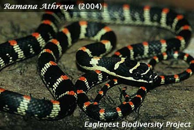
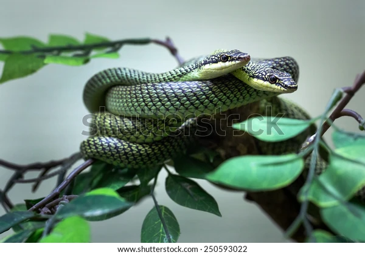

| Class | Order | Family |
|---|---|---|
| Reptilia | Squamata | Colubridae |
Body of Ornate flying snake is long and slender and covered with weakly keeled scales. Dorsal part of the body is greenish. Black color is dominant at the center of dorsal and posterior body. Red spot is present dorsally from neck to the end of the body. Ventral part is yellowish-green without any pattern. Head is flattened and broader than neck. Head is black with yellow cross bars. Upper lip is yellowish. Color patterns very geographically. Grow to 3-4 feet on average.
কালনাগিনী সাপের শরীর লম্বা ও সরু। এদের আঁইশ গুলো মসৃণ বা কিছুটা খরখরে (Keeled). এ সাপের পিঠের দিক গাঢ় সবুজ। পিঠের মধ্যভাগ এবং লেজের দিক কালচে। ঘাড় থেকে লেজের শীর্ষ পর্যন্ত ফোঁটা ফোঁটা লাল দাগ থাকে। এদের পেটের দিক হলিদাভ সবুজ। মাথা ঘাড় থেকে প্রশস্ত এবং উপর-নিচ চ্যাপ্টা।মাথার উপর অংশ কালো এবং কয়েকটি হলুদ দাগ থাকে। কালনাগিনীর উপরের ঠোঁট হলুদ। অঞ্চল ভেদে কালনাগিনী সাপের রঙে ভিন্নতা দেখা যায়। গড়ে এরা ৩-৪ ফিট লম্বা হয়।
This tree snake species can cross a moderate path jumping from one tree branch to another. Hence, it is called “Flying snake”. This diurnal snake is criticized in mythology and drama or cinema in Bangladesh. It also horrified by its Bengali name Kalnagini. This mildly venomous snake is very calm and people are often entertained and stupefied by snake charmers. This snake can do no harm to human being.
গেছো এ সাপটি গাছের এক শাখা থেকে অন্য শাখায় লাফিয়ে বেশ কিছুটা দূরত্ব অতিক্রম করতে পারে। এজন্য ইংরেজিতে এদের Flying snake বলে। বাংলাদেশের রুপকথা, গল্প-কাহিনী বা নাটক সিনেমা এ সাপটিকে কুখ্যাতি দিয়েছে। এ কুখ্যাতির জন্য এর নাম "কালনাগিনী "ও কিছুটা দায়ী। আদতে এটি একটি মৃদু বিষধর এবং শান্ত সাপ। এ সাপটি দিয়ে সাপুড়েরা মানুষদের বোকা বানায়। কালনাগিনী মানুষের কোন ক্ষতি করে না।
India, Nepal, Sri Lanka, Bangladesh, Bhutan, Myanmar, Thailand, Malaysia, Laos, Cambodia, Vietnam, China, and Philippines.
ভারত, নেপাল, শ্রীলঙ্কা, বাংলাদেশ, ভূটান, মিয়ানমার, থাইল্যান্ড, মালেশিয়া, লাওস, কম্বোডিয়া, ভিয়েতনাম, চীন এবং ফিলিপাইন।
Found all over Bangladesh except northern part of the country. It is more frequent in southern region.
বাংলাদেশের উত্তরাঞ্চল বাদে সব জায়গার বনাঞ্চলে এ সাপটি পাওয়া যায়।দক্ষিনাঞ্চলে এটি বেশি পাওয়া যায়।